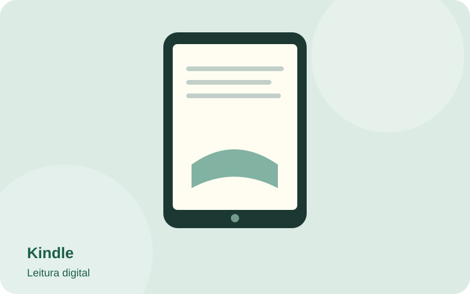
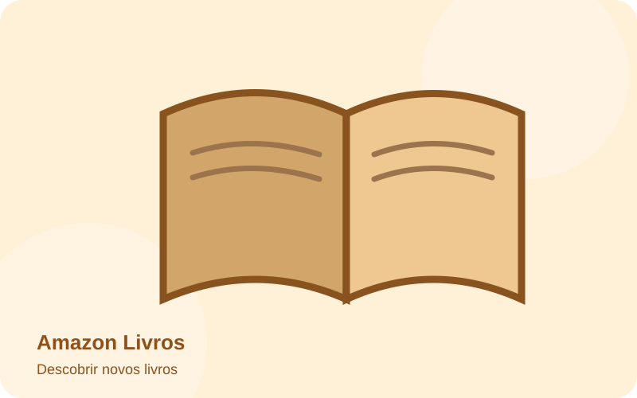

Kindle
Leitura digital

No Kindle, posso levar vários livros para qualquer lugar e ler pelo aplicativo ou pelo dispositivo.
Conhecer o Kindle ↗https://www.amazon.com.br/kindle
Entre páginas e histórias, descubro novas ideias, personagens e mundos.
A leitura é um dos meus hobbies favoritos porque me permite aprender, relaxar e viver várias vidas. Também gosto de descobrir livros novos e acompanhar resenhas de outros leitores.
Abaixo estão três sites que fazem parte desse universo:
Leitura digital

No Kindle, posso levar vários livros para qualquer lugar e ler pelo aplicativo ou pelo dispositivo.
Conhecer o Kindle ↗https://www.amazon.com.br/kindle
Descobrir novos livros

Na Amazon, pesquiso títulos, autores, sinopses e avaliações de leitores antes de escolher a próxima leitura.
Explorar livros na Amazon ↗https://www.amazon.com.br/livros
Resenhas e recomendações
No BookTok, acompanho resenhas, opiniões e indicações de leitores que me ajudam a descobrir histórias.
Ver resenhas no BookTok ↗https://www.tiktok.com/tag/booktok
“Cada livro é uma nova oportunidade de conhecer outro mundo.”